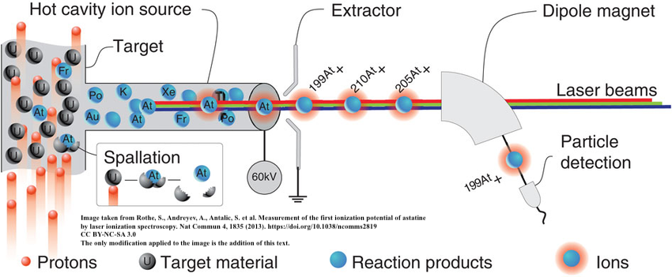

Joel Yang
Undergraduate Student
Huazhong University of Science and Technology
Luoyu Lu Road
420111 Wuhan, China
joelyyang@outlook.com
Luoyu Lu Road
420111 Wuhan, China
joelyyang@outlook.com
Bio
I am a undergrate at HUST.
Publications

Rothe, S.,
Andreyev, A. N.,
Antalic, S.
Borschevsky, A.
Capponi, L.
Cocolios, T. E.
De Witte, H.
Eliav, E.
Measurement of the First Ionization Potential of Astatine by Laser Ionization Spectroscopy
Measurement of the First Ionization Potential of Astatine by Laser Ionization Spectroscopy
In
Nature Communications,
2013.
The radioactive element astatine exists only in trace amounts in nature. Its properties can therefore only be explored by study of the minute quantities of artificially produced isotopes or by performing theoretical calculations. One of the most important properties influencing the chemical behaviour is the energy required to remove one electron from the valence shell, referred to as the ionization potential.
Cite Measurement of the First Ionization Potential of Astatine by Laser Ionization Spectroscopy
@article{article,
author = {Rothe, Sebastian and Andreyev, A and Antalic, Stanislav and Borschevsky, Anastasia and Capponi, Luigi and Cocolios, Thomas and De Witte, Hilde and Eliav, Ephraim and Fedorov, D.V. and Fedosseev, Valentin and Fink, D and Fritzsche, s and Ghys, Lars and Huyse, M and Imai, Nobuaki and Kaldor, U and Kudryavtsev, Yu and Koester, Ulli and Lane, J and Wendt, Klaus},
year = {2013},
month = {05},
pages = {1835},
title = {Measurement of the first ionization potential of astatine by laser ionization spectroscopy},
volume = {4},
journal = {Nature communications},
doi = {10.1038/ncomms2819}
}